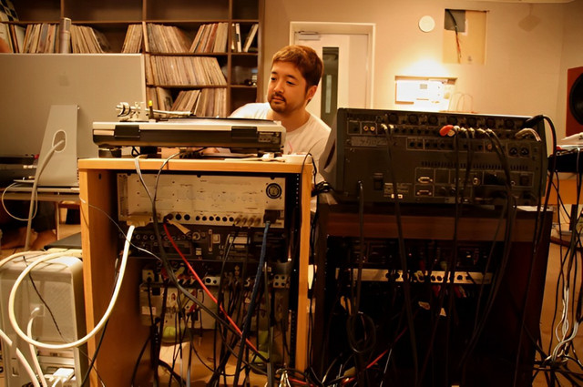

ABOUT
Jun Seba (
February 7, 1974 – February 26, 2010), born Jun
Yamada (山田 淳), better known by his stage name
Nujabes (/nuːdʒəˈbɛs/; ヌジャベス, Nujabesu
[nɯ.(d)ʑaꜜbe.sɯ]), was a Japanese music producer
best known for his atmospheric instrumental mixes
sampling from hip-hop, soul, and jazz, as well
as incorporating elements of trip hop, breakbeat,
downtempo, and ambient music.

Seba released two studio albums during his lifetime: Metaphorical Music (2003) and Modal Soul (2005), while the album Spiritual State was released posthumously in 2011. He was the founder of the independent label Hydeout Productions and released two collection compilations: Hydeout Productions 1st Collection (2003) and 2nd Collection (2007). Additionally, Seba collaborated on the soundtrack for Shinichirō Watanabe's anime series Samurai Champloo (Music Record: Departure and Impression) in 2004.Seba was an intensely private person and was a reluctant public figure throughout his career, who wanted the focus to be on his music and not on himself. He avoided interviews, promotional activities and so few were his photos that many fans were not even sure what he looked like.[1]
In 2010, Seba died in a traffic collision at the age of 36.[2] Although relatively niche during his lifetime, Seba has since achieved posthumous acclaim and been referred as the "godfather" of lo-fi hip hop.